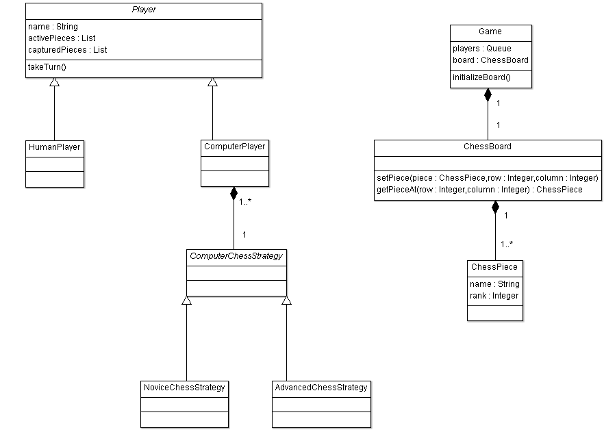

CSC 385 25 points |
||||||||||||||||||||||||||
Instructions |
||||||||||||||||||||||||||
When building a moderate to large scale software application it is best to follow an established development process as opposed to immediately hacking out code and building everything on the fly. Most software development processes have in common the following four, major phases:
The most straightforward software process model is known as the waterfall model. In the waterfall model the above four phases are performed sequentially, with each move to the next step reminiscent of water falling down to the next level of a waterfall, hence the name, "waterfall model". The waterfall model is strict, however, and requires that each step be completed before moving on to the next step. So for example, you would not move to the design phase until you know you have a complete set of requirements. Likewise, you would not begin writing any code until you have a complete design of the entire software application. The first phase involves gathering the requirements by eliciting them from the customer or end user. This is a crucial first step, since the output of this step tells you what you need to build. Most software bugs can ultimately be traced back to either incomplete or incorrect requirements, or as a result of a change in requirements during the development process. Requirements engineering is a discipline in its own right, and if you have ever tried to completely and correctly specify every detail of a problem, you can begin to grasp how crucial the requirements elicitation phase is. Typically requirements are elicited by the developer asking the customer or end user a series of questions that will hopefully elicit all the requirements the customer needs. This phase has been completed for you for the semester project, in the form of the requirements document I have posted. In the second phase of development, design, the goal is to determine how to build the software described by the requirements specification. That is the purpose of this assignment as it relates to the semester project. There are many techniques and methodologies that can be used in the design process, and it is common to employ more than one. For this assignment, we are only looking at one specific method, the UML class diagram. UML is an anagram for Unified Modeling Language, which is a comprehensive set of design tools for building object-oriented software. UML is also a language in the sense that it can be modified and extended, but in this assignment we are only going to focus on using one particular tool: the class diagram. The class diagram is a high-level architectural diagram that shows the classes and interfaces that will comprise the software. For each class and interface it is possible to define attributes and methods. The class diagram can also be used to show relationships between the classes and interfaces, such as inheritance, composition, agggregation, etc. The diagram can also show which classes use which other classes. If done well, a UML class diagram represents a high-level blueprint of the software to be developed. It is important to note that in the design phase no implementation code is written. There are only diagrams, high-level pseudocode (descriptions that are written in code-like shorthand, but which are not compileable), and detailed notes. Interestingly, the UML class diagram is defined well enough that using the proper tool, the entities in the diagram can be translated into "skeleton" code; i.e., empty classes, or classes containing attributes and empty methods. These tools do not actually write the software for you, they simply automate the simplest aspects of coding. |
||||||||||||||||||||||||||
| Example — Building a Chess Game | ||||||||||||||||||||||||||
| Suppose you were building a chess game. If you think about the various objects in a chess game, a few that come to mind are the playing pieces, the chess board, movement strategies, and players. An example of a partial class diagram for a chess game project might be as follows: | ||||||||||||||||||||||||||
|  | ||||||||||||||||||||||||||
In this diagram, there are 9 classes: Player, HumanPlayer, ComputerPlayer, Game, Chessboard, ChessPiece, ComputerChessStrategy, NoviceChessStrategy, and AdvancedChessStrategy. The classes Player and ComputerChessStrategy are abstract, signified by the italicized class name. The arrows extending from the classes HumanPlayer and ComputerPlayer toward the Player class indicate that both HumanPlayer and ComputerPlayer are derived from (or extend) the Player class. The link between ComputerPlayer and ComputerChessStrategy has a diamond at one end, and is known as a composition relationship. It means that a ComputerPlayer has-a ComputerChessStrategy. The numbers on the link indicate the "arity" of the relationship, which in this case is 1 to many (1..*), indicating it is possible for a single ComputerPlayer to have more than one strategy. Attributes for the classes are shown in the section immediately below the class name. So for the ChessPiece class there are two attributes: the String attribute name and the integer attribute rank. These attributes indicate each ChessPiece has a common name (such as a rook), as well as a numerical rank compared to the other pieces. Methods are shown in the bottom section for each class. For the ChessBoard class there are two methods: setPieceLocation(ChessPiece piece, int row, int column) and getPieceAt(int row, int column). Several tools exist that allow you to easily create class diagrams. The diagram above was created using Microsoft Visio. You can review the diagram and quickly make changes to it as necessary, repeating the process until you are satisfied with the design. Since no source code has been written yet, you don't have to worry about rewriting code every time you make a change. When you are finished, the diagram tells you what classes you need to create, what attributes they should have and what methods they should have. More advanced UML tools can even take class diagrams like the one shown above and generate skeleton code for you. All you need to do then is fill in the implementation code for the methods. |
||||||||||||||||||||||||||
| Your Assignment | ||||||||||||||||||||||||||
For this assignment, read through the requirements for the semester project. The purpose of this assignment is to help you break down the project requirements and come up with a design before you start writing the code. As you read through the requirements, most of the classes you will need to create should suggest themselves. You should also see how you can use inheritance to make your job of programming some of the classes a little easier. Some very general guidelines for determining what should be an attribute versus what should be a method are:
By "noun" and "verb" I am not referring to literally every noun and verb in the requirements. A careful eye will reveal that certain nouns and verbs carry more relevance to the project than others. Those are the ones you want to focus on. For example, the title of the semester project is, "Ant Colony Simulation". Given their presence in the project title, it stands to reason that these three words have very high relevance to the project. It would therefore be reasonable to assume you could have at least three classes based only on the project title: Ant, Colony, and Simulation. Each ant type has certain abilities; e.g., foragers forage for food, soldiers attack Balas, etc. It would therefore make sense to have methods somewhere in your design named "forage" and "attack". As a final example, there is a statement in the requirements specification that states, "Each ant should be identified by a unique integer ID." Here, the noun "ID" might be a good candidate for an attribute (due to the has-a relationship in that each ant has an ID). The adjective, "integer", gives a hint as to the data type of the ID. The adjective, "unique", indicates a constraint upon the value of the ID, namely that no two ants can have the same value for their ID. This is something that might be able to be enforced at the programming language level, or enforcement of the constraint may require an algorithm, which will be manifested as the implementation of one or more methods. After reading through the requirements for the semester project, create a class diagram modeling the architecture of the ant colony simulation using the format shown in the chess example above. There are four very broad problems that need to be handled in some way in your diagram. Refer to the rubric below for these problems. You need to clearly show in your diagram how you plan to solve each of the four problems using a combination of classes, interfaces, attributes, and enums (enums are optional, but I include them in the list for completeness). There are a lot of tools out there to help you draw UML diagrams (Microsoft Visio—which you can download for free from the MSDNAA website, ArgoUML, et al.). ArgoUML is probably the easiest to use. In order to grade your assignment, I must be able to either run the same tool on my computer, or you must be able to save your diagram as a common image format, such as .jpg or .gif. Creating this diagram will help you organize your thoughts for the project, so take the assignment seriously and try to fill in as many details as you can. Don't worry if you find later on that you can't make your actual project correspond exactly to the design — designs typically evolve a little bit as a project progresses, anyway. Once you have come up with an initial design that you think will work, go ahead and begin implementing your project. I encourage you to start this assignment as soon as you are able. If you wait too long you may find yourself short on time near the end of the semester. Also, resist the temptation to start coding the project before you have a design in place. |
||||||||||||||||||||||||||
| Rubric | ||||||||||||||||||||||||||
|